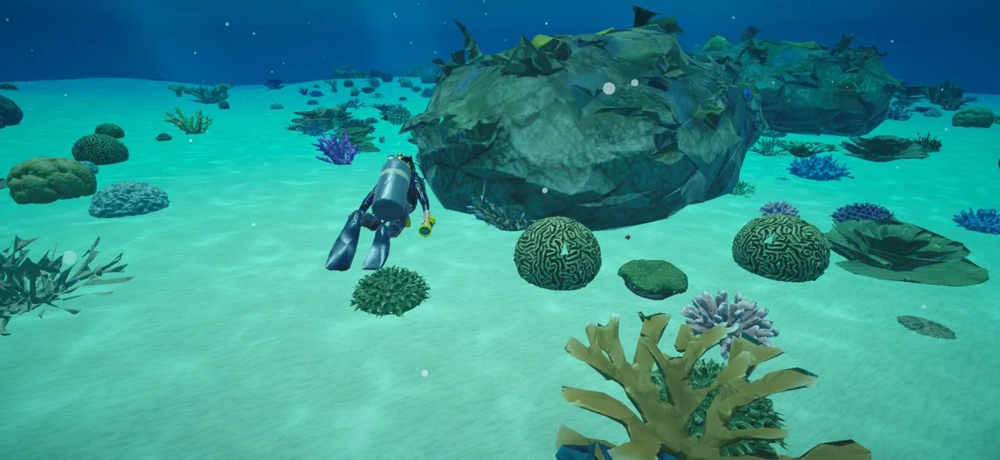
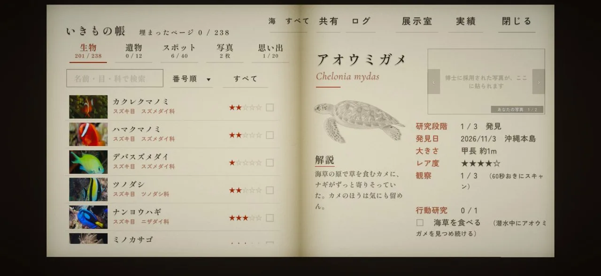
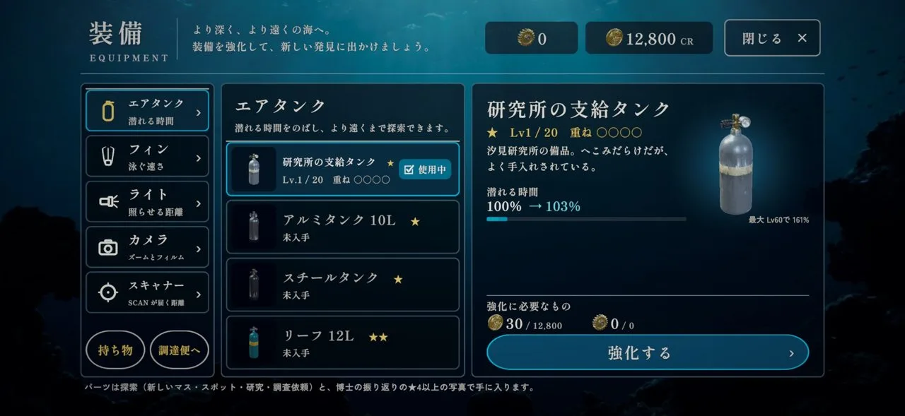

Ocean Discovery（App Store での名前は Ocean Discovery Diving）は、沖縄の海に潜って生きものを見つけ、写真を撮って図鑑を埋めていくダイビング探索ゲームです。ダウンロードは無料で、沖縄本島と慶良間諸島の2つの海は、すべてのスポットを無料で遊べます。この記事では、はじめての人に向けて、ゲームの中身、遊び方の流れ、無料で遊べる範囲をまとめます。金額と版は、2026年11月20日時点の App Store の情報です。
01Ocean Discovery はどんなゲーム？

海に潜り、出会った生きものをカメラで撮って、図鑑を1種ずつ埋めていくゲームです。撮った写真は、海洋研究所の汐見ナギ博士が1枚ずつ見て、点数をつけてくれます。
生きものは全部で278種です。カクレクマノミ、アオウミガメ、メガネモチノウオ（ナポレオンフィッシュ）、ナンヨウマンタ、ジンベエザメ、ザトウクジラなどが登場します。小さなエビやカニ、ウミウシから大型のサメまで、沖縄の海の生きものが暮らしています。
図鑑には、実際の生きものの写真と、名前・大きさ・すみか・くらしの説明がつきます。設定から「ひらがな」に切り替えると、すべての文字がひらがなと分かち書きになるので、こどもと一緒に遊べます。
アカウント登録は不要で、広告はありません。言葉は日本語・ひらがな・英語に対応しています。
023つの海と32のダイブスポット

潜れる海は3つ、ダイブスポットは合わせて32あります。
| 海 | スポット数 | 主な見どころ | 料金 |
|---|---|---|---|
| 沖縄本島 | 11 | サンゴの庭、白砂のラグーン、峡谷、沈没船、海底洞窟、ドロップオフ、ブルーホール | 無料 |
| 慶良間諸島 | 8 | 「ケラマブルー」の透明な海、白砂の水路、ウミガメの根、外洋のドロップオフ | 無料 |
| 石垣島 | 13 | マンタが集まる川平石崎の水路、45mの断崖、ハナゴイの塔、ビッグアーチ、マングローブの水路 | 買い切り 1,200円 |
ドロップオフは、海底が崖のように深く落ちこむ地形のことです。
沖縄本島と慶良間諸島は無料で、すべてのスポットと238種の生きものに出会えます。石垣島は、買い切りで解放する海です。
03遊び方の流れ

1回のダイブは、次の流れで進みます。
- 海とダイブスポットを選んで潜ります。潜るにはスタミナを使います。スタミナは時間で回復します。
- 海の中で生きものを見つけ、カメラで撮ります。魚の群れやサンゴの群れも撮れます。
- 潜って撮った写真から、生きものごとに1枚を選んで博士に見せます。
- 博士が採点します。見られるのは、写りの大きさ、構図、向き、行動（食事・群れ・掃除など）、ブレの少なさです。
- いちばんの1枚が図鑑に残ります。
図鑑とは別に、「いきもの帳」もあります。博士の師匠が遺した、書きかけの生きもの図鑑です。自分の写真で1ページずつ埋めていくと、物語が少しずつ進みます。
博士に星をもらった写真や自分の図鑑は、1枚の画像にして SNS やメッセージで共有できます。Game Center の実績と、図鑑の種類数のランキングにも対応しています。
04いい写真を撮るコツと、季節の出会い
写真のコツは、じっと待つことです。急いで近づくと、生きものは逃げてしまいます。魚の群れやサンゴの群れは、画面いっぱいに写すほど博士の評価が上がります。
出会える生きものは、季節と時間で変わります。
- 冬（1〜3月）の慶良間には、ザトウクジラの親子がやって来ます。歌が聞こえたら、すぐ近くにいるかもしれません。
- 初夏（5〜6月）の沖縄本島の夜は、サンゴの一斉産卵があります。
- 秋（9〜10月）の石垣島は、マンタの季節です。
- 朝・昼・夜、晴れ・くもり・雨でも、出てくる生きものが変わります。
慶良間や石垣のいくつかのスポットでは、メガネモチノウオやロウニンアジなどの大物に会えることがあります。会えそうなときは、潜る前の画面に「大物の気配」が出ます。
05無料で遊べる範囲とアプリ内課金

アプリ内課金は、すべて任意です。App Store の説明にある項目と金額は次のとおりです（2026年11月20日時点）。
| 項目 | 中身 | 価格 |
|---|---|---|
| 石垣島 | 海の解放（買い切り） | 1,200円 |
| 研究員パス | 毎日の調達チケット、スタミナの上限が8に、着せ替え「研究員」 | 1か月 480円 |
| スタミナチャージ | まとめ買いもあり | 1回 100円・5回 480円・10回 900円・20回 1,700円・50回 4,000円 |
| 調達便・はじめての調達パック | 写真の飾り・着せ替えなどが当たる | App Store のページで確認 |
| 着せ替え・水中スクーター・開発の応援 | — | App Store のページで確認 |
注意研究員パスは、自動更新のサブスクリプション（期間ごとに自動で更新される支払い）です。期間が終わる24時間前までに解約しないと、自動で更新されます。解約は、iPhone の「設定」→ 自分の名前 →「サブスクリプション」からできます。
06バージョン 1.1.1 で加わったこと
公開中の版は 1.1.1 です。この版の更新内容は次のとおりです。
- 魚の群れやサンゴの群れを、カメラで撮れるようになりました。
- 撮影の手ごたえが足されました。ピントの音とフラッシュ、自己ベストの写真のお祝いが出ます。
- 大物に会えるスポットができ、大物を記録するミッションが加わりました。
- 生きもの56種が、本物そっくりの立体の姿になりました。これで、3つの海の生きものはすべて立体です。
- 装備画面で、まだ持っていない装備から調達便を開けるようになりました。
- 写真にサンゴや群れの一部が写らないことがある問題と、手紙の宛名に名前が正しく出ないことがある問題が直りました。
07まとめ
Ocean Discovery は、沖縄の海で生きものを撮り、博士に見せて図鑑を埋めていくゲームです。沖縄本島と慶良間諸島は無料で、19のスポットと238種の生きものに出会えます。まずは無料の2つの海で、じっと待って1枚を撮るところからはじめてみてください。
ダウンロードは App Store から。App Store で見る